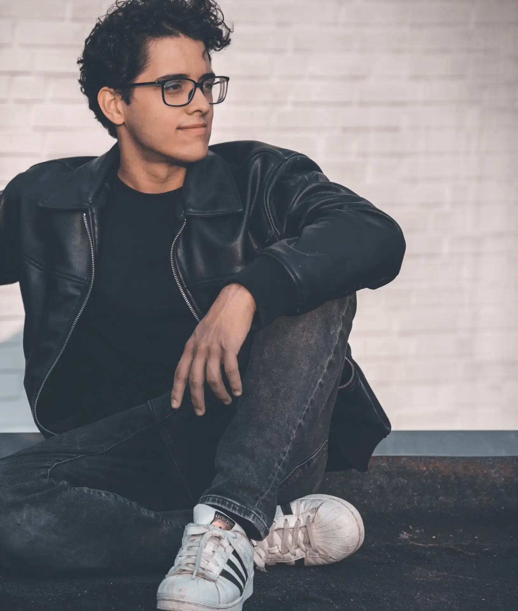
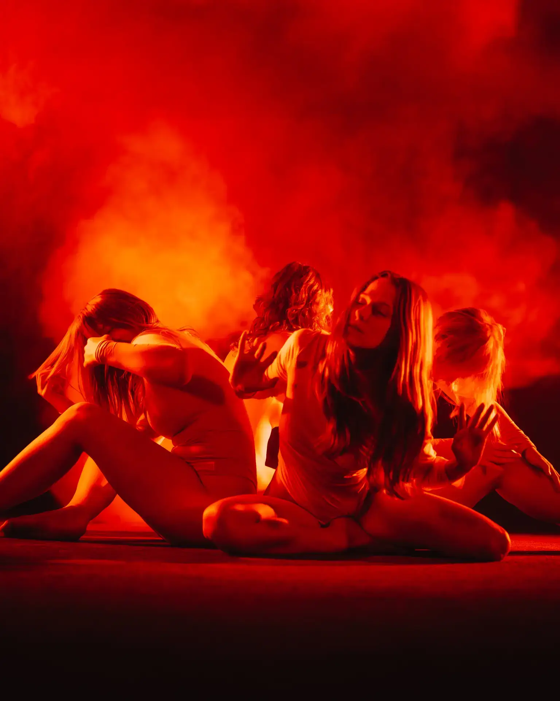

Matthias Ramahi
Bilder, die einen Raum
verändern.
Seit über zehn Jahren entstehen meine Serien im Spannungsfeld von Präzision und Atmosphäre — Automobile, Oldtimer, Sportwagen, Motorräder, Portraits und Landschaften. Jede Arbeit folgt einer ruhigen redaktionellen Logik: Licht, Komposition, Material, Zeit.
Auftraggeber sind Marken, Sammler, Manufakturen und private Eigentümer aus Düsseldorf, Köln, Essen, Dortmund und dem gesamten Rheinland — überall dort, wo Bilder über Auflage, Sammlung oder Markenwert mitentscheiden.
Sechs Bereiche.
Eine Linse.
Jeder Bereich hat eine eigene visuelle Logik — Bewegung, Material, Mensch, Raum. Auswählen, weiterlesen, eine Serie sehen.



Über mich
Hinter der
Kamera.
Ausgebildet im Handwerk, denkend wie ein Editor — ich arbeite ruhig, präzise und in engem Dialog mit dem Auftraggeber. Vom ersten Briefing bis zum finalen Druck.
Mein Studio steht in Düsseldorf, mein Netzwerk im gesamten Rheinland. Ich begleite Marken, Manufakturen, Sammler und private Eigentümer dort, wo ein Bild über Auflage, Sammlung oder Markenwert mitentscheidet.
Weitere Leistungen
im Überblick.
Für Projekte, die über die Fotografie hinausgehen — Druck, Großformat, Werbetechnik, Webdesign, Video, Sonderanfertigungen und Musik. Kuratiert, koordiniert, ein Ansprechpartner.
Fotolabor & Druck
FineArt- und Hochwertdruck — von der Datei bis zur signierten Edition.
Detail → N° 02Großformatdruck
Poster, Banner, Messewände, Acrylglas — kalibrierte Galeriequalität.
Detail → N° 03Werbetechnik
Schaufenster, Beklebungen, Firmenschilder und Displaylösungen für den Raum.
Detail → N° 04Webdesign & SEO
Markenseiten, Portfolios und lokale Sichtbarkeit im Rheinland.
Detail → N° 05Viola Musik
Live-Musik und klassische Begleitung für Empfänge und Vernissagen.
Detail → N° 06Videografie
Marken-, Event- und Imagefilm — vom Konzept bis zum finalen Cut.
Detail → N° 07Drucke & Sonderanfertigungen
Mappen, Editionen, Geschenke und Interior — von der Idee zum Unikat.
Detail →Journal.
Notizen aus dem Studio — Workflow, Material, Auftragsgeschichten. Lange Form, ruhig kuratiert.

Wie ich einen Oldtimer-Shoot im Studio aufbaue.
Lichtsetup, Material, Reflexionen — Schritt für Schritt durch einen kompletten Studio-Workflow.
Lesen →
Vom Sensor bis zur FineArt-Edition.
Farbprofile, Papiere, Druckpartner — was zwischen Bild und signierter Edition wirklich passiert.
Lesen →
Lokal arbeiten — Düsseldorf, Köln, Essen.
Wie aus einem Netzwerk im Rheinland ein Workflow für Auflage, Sammlung und Marke entsteht.
Lesen →Nächster Schritt
Projekt anfragen.
Schreiben Sie kurz, welche Leistung Sie interessiert, wo das Projekt stattfindet und welchen Zeitraum Sie planen. Ich melde mich mit Rückfragen oder einem nächsten Schritt per E-Mail.